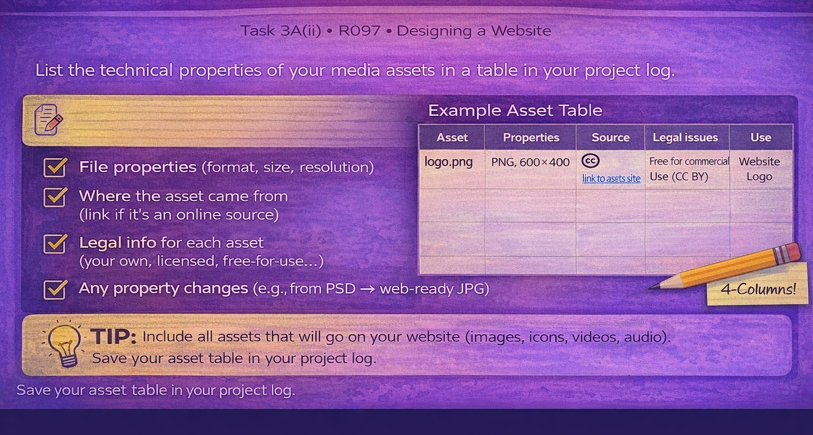

Task 3A(ii) Technical fitness
Test/check and explain if repurposed asset properties are fit for purpose.
Technical properties
Fit for purpose
Explain trade-offs
Be honest:
If something is not fit for purpose, say so — and explain exactly how you would fix it.
Download the asset table template
Download the blank asset table template and fill in correctly all off the assets that you have used in your IDMP.
Open the asset table template
Technical points to evaluate
- File size vs quality (is it compressed enough without looking awful?).
- Dimensions (are images the right size for where they appear?).
- Format choice (SVG/PNG/JPG/WebP) and why it suits that asset.
- Consistency across the site (same icon size, same banner size).
Example evaluation statements
- I converted the hero image to JPG and reduced it to 1600px wide so the page loads faster.
- Icons are SVG so they remain sharp on high-resolution screens.
- This photo is slightly pixelated on mobile because… (then explain fix).
- The audio is MP3 because it keeps file size low while still sounding clear.
Watch: Understanding Asset Technical Fitness
This video explains how to check file size, dimensions, formats and why these choices affect how well your assets perform in a website.